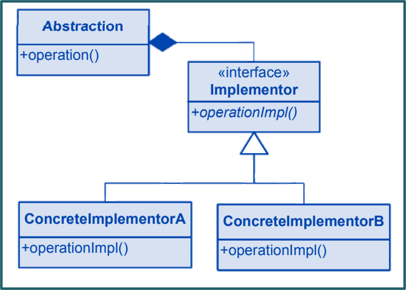

The Bridge pattern is a design pattern in software engineering that decouples an abstraction from its implementation, allowing both to vary independently. It's used when you have a situation where a class has multiple dimensions of variability and you want to avoid a direct, tight coupling between these dimensions.Learn more.
Key Characteristics
Key characteristics of the Bridge pattern include:
Abstraction: The pattern defines an "Abstraction" class that provides a high-level interface and delegates the implementation details to a separate "Implementation" hierarchy.
Implementation: The pattern defines an "Implementation" interface or abstract class that declares the methods for implementing the specific functionality.
Refined Abstractions: Concrete subclasses of the "Abstraction" class are called "Refined Abstractions." They extend the base abstraction by adding additional features.
Concrete Implementations: Concrete subclasses of the "Implementation" interface provide the actual implementation details for the methods declared in the "Implementation" hierarchy.
Decoupling: The Bridge pattern separates the abstraction and implementation hierarchies, allowing changes in one hierarchy to not affect the other.
Class Diagram

Example
A real-world example of the Bridge pattern can be found in the development of drawing applications that support different shapes and rendering platforms. The Bridge pattern allows you to separate the shape classes from the rendering logic, enabling you to create different combinations of shapes and renderers without having to create a multitude of subclasses.